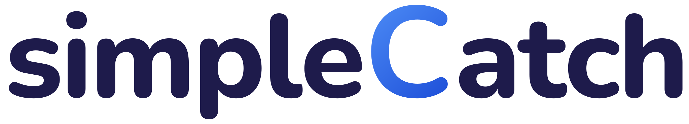
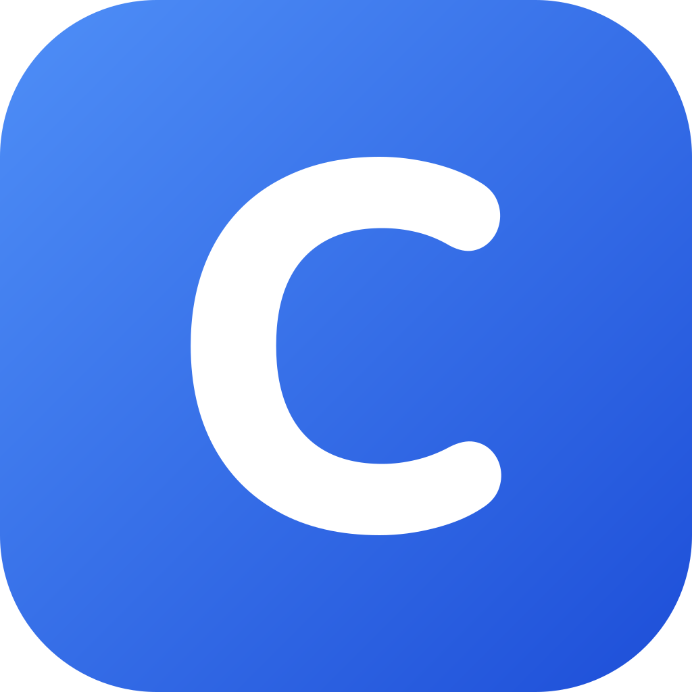
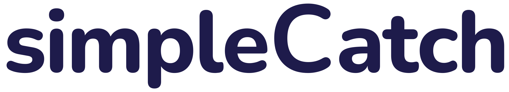
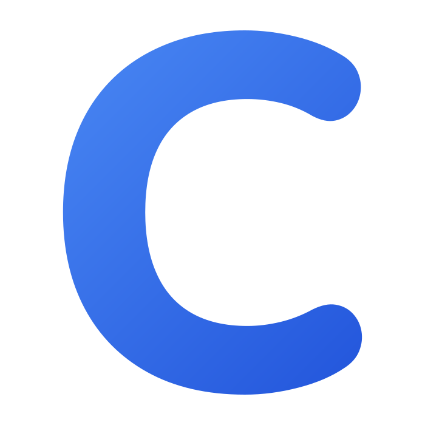

1 · הלוגו הראשי
השם simpleCatch: s קטנה ו־C גדולה וכחולה. ה־C היא הסימן של המותג: היא גדולה ב־10% משאר האותיות ובמשקל קל יותר (Bold), כדי שעובי הקו שלה יתאים לאותיות האחרות. השאר ב־Nunito ExtraBold, בכחול־כהה.

2 · מרווח ומידות מינימום
מרווח פנוי סביב הלוגו שווה לגובה האות e בשם. לא מציבים טקסט או תמונות בתוכו.
e
e
מינימום: 120px רוחב

אייקון: 32px
favicon: 16px
3 · גרסאות
גרסת הצבע על רקע בהיר היא ברירת המחדל, על כהה משתמשים בגרסה עם כחול בהיר. חד־צבעי לדפוס, לחותמות ולרקעים עמוסים. האייקון הוא אריח כחול עם C לבנה, וה־C לבדה לאווטאר ולמקומות צרים.
צבע, על בהיר
צבע, על כהה

חד־צבעי כהה

חד־צבעי לבן, על כחול
אייקון אפליקציה
favicon

ה־C לבדה
ה־C לבדה, על כהה
4 · צבעים
כחול־כהה (navy) לאותיות, וכחול עם גרדיאנט עדין ל־C ולאייקון. אין צבע שלישי בלוגו.
5 · אותיות
השם נכתב תמיד simpleCatch משמאל לימין, גם בעברית. בטקסט רציף כותבים SimpleCatch. בממשק ובטקסטים נשארים הגופנים הקיימים של המערכת.
simple + atch: Nunito ExtraBold (800)
C: Nunito Bold (700), בגודל 110%
הגופן ברישיון SIL Open Font License
6 · מה לא עושים
לא מותחים או מעוותים
לא משנים צבעים
לא מסובבים
לא מוסיפים צל או קו מתאר
7 · שימושים
אווטאר ברשתות
האייקון נחתך לעיגול וה־C נשארת במרכז.